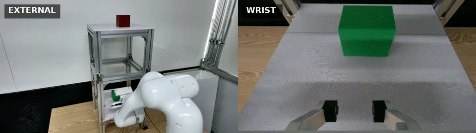
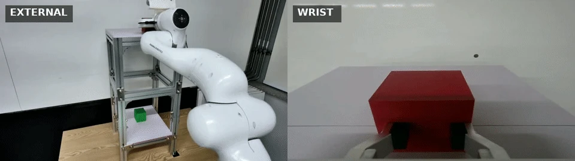

Normal phase handoffs can look uncertain. MoE-DAgger uses router history to decide when the robot should continue—and when to request human correction.
Matched active human-control budgets · 50 evaluation rollouts per method and task · Evaluation details ↓
01 / IN THE REAL WORLD
Two tasks. A shared phase structure.
A Franka Research 3 pushes a cube across a stop line, clears the shelf, and returns home. Green uses the lower shelf; Red uses the upper shelf. Each task has its own learned policy.
A guided overview of the two tasks, router behavior, and transition-aware correction rule.
Green
Lower shelf
TASK 01

Approach, enter, push, withdraw, and return. Synchronized external and wrist views of the lower-shelf task.
Red
Upper shelf
TASK 02

The same semantic sequence on the upper shelf, with different geometry, visual context, and contact conditions.
P0Approach
P1Entry / alignment
P2Push
P3Withdrawal / clearance
P4Home return
02 / THE CORE IDEA
Same entropy. Different reasons to intervene.
Router entropy alone cannot distinguish a normal handoff from support for distant or earlier phases. The structure and history of router support make that distinction.
AT STABILIZED PHASE P0
An adjacent handoff.
Support is shared by P0 and its legal successor, P1. A locally compatible transition is allowed to settle within a bounded window.
Click a case to compare the graph.
↗ Continue while the handoff settles
ROUTER PROBABILITYH = 0.57
P0
P1
P2
P3
P4
Illustrative probability distributions from the paper’s equal-entropy example. Permuting support preserves entropy.
THE ACQUISITION RULE
Read the history. Preserve the handoff.
A phase-supervised soft mixture of five ACT-style action heads predicts robot motion from four-view RGB history and proprioception. The acquisition gate reads the causal router history.
01
Let compatible transitions settle. Suppress a query during a bounded handoff to the next phase.
02
Request correction when needed. Trigger on persistent entropy outside that handoff, a transition timeout, or persistent regression.
03
Keep action routing soft. The phase graph informs acquisition. The policy receives no runtime phase label, progress variable, or hard phase command.
Figure 2 from the manuscript. Click to view at full resolution.
03 / INSIDE THE DECISION
From router signals to correction.
Explore six clips of the policy in action and the acquisition rule. Select an example to inspect its camera views and, where available, router diagnostics.
Choose a clip
Click a preview to watch the animation below.
Selected: 01 / 06 · Soft routing
GREEN · SUCCESSFUL ROLLOUT
Soft routing through the task.
External and wrist views are synchronized with the five phase probabilities and router entropy. The policy blends phase-anchored action heads as the robot progresses through the task.
The no-veto clip is an illustrative counterfactual replay. The complete-rule clip replays a Red collision trace; the causal-evidence clip shows a separate Red no-contact trace. Displayed proposals are diagnostic evidence, not demonstrations of physical recovery. The second-push clip shows observed robot motion in two separate Red rollouts, without router overlays.
04 / MEASURED ON THE ROBOT
Better use of the correction budget.
At matched active human-control time, transition awareness improves task success over the same-signal, phase-unaware entropy gate.
Task success
Collision-free completion, return home, and stop-line crossing.
Bars: task-success point estimates. Whiskers: 95% Wilson confidence intervals. Source: manuscript Table II. Each method–task cell has 50 rollouts from two training seeds.
84% / 78%
MoE-DAgger success on Green / Red 95% CIs: [71.5, 91.7] / [64.8, 87.2]
112.55 / 127.55 s
Active human control, Green / Red Other added-data methods matched within ±5%.
View all methods and exact values +
Table II · Green / Red paired values
Method
Task success (%)
Sequence execution (%)
Collision (%)
Human control (s)
ACT temporal disagreement is competitive (82% / 72%); the task-success differences against it are not statistically resolved. Zero observed collisions is a finite-sample result. Each method–task condition uses one acquired dataset, so the two training seeds do not measure variability across acquisition sets.
05 / WHY TIMING MATTERS
Ask on the right rollout. At the right moment.
COMMON-TRACE AUDIT
83.3%
of first proposals align with predefined failure windows.
At 15 selected traces per task, pooled aligned yield is 83.3% for MoE-DAgger, 70.0% for ACT temporal disagreement, and 63.3% for ensemble disagreement.
The same 50 intervention-free traces per task are replayed. This measures proposal allocation; it does not establish intervention recovery. Source: Table III.
ACTIVE NO-VETO ABLATION
68 → 84%
Green task success, without → with the adjacent veto.
On Red, task success changes from 60% to 78%. The full and no-veto rules independently collect corrections under matched human-control time and then retrain.
Point estimates favor the full rule; the 95% intervals for these task-success differences include zero. Source: Table V.
EXPERIMENTAL SCOPE
One robot and fixture, two geometric variants of a pushing task, separate task-specific policies, and one aggregation round. Generalization to other task families and shared policies remains open.
06 / READ & REUSE
The paper, in full.
Read the paper for the complete acquisition rule, experimental protocol, common-trace analysis, and limitations.
@misc{heo2026moedaggertransitionawarerouterentropygating,
title={MoE-DAgger: Transition-Aware Router-Entropy Gating for Selective Human Correction in Phase-Structured Manipulation},
author={Sungjun Heo and Sungjun Yang and Heedon Jeong and Junhyoung Ha and Jeong hwan Jeon},
year={2026},
eprint={2611.10825},
archivePrefix={arXiv},
primaryClass={cs.RO},
url={https://arxiv.org/abs/2611.10825},
}
Official arXiv citation · arXiv:2611.10825 [cs.RO] · 2026.